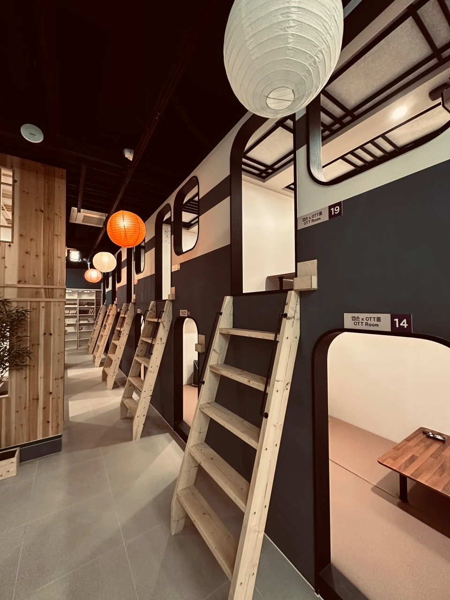

도도의 다음 여행을 함께 만들어갈 파트너를 찾습니다. 단순한 가맹점 확대보다 점주와 본사가 함께 성장할 수 있는 구조를 지향합니다.
OUR STANDARD
브랜드보다 먼저,
운영을 설계합니다.
도도는 가맹점 수를 늘리는 것보다 실제 매장이 안정적으로 운영될 수 있는 구조를 먼저 고민합니다.

도도의 다음 여행을 함께 만들어갈 파트너를 찾습니다. 단순한 가맹점 확대보다 점주와 본사가 함께 성장할 수 있는 구조를 지향합니다.
도도는 가맹점 수를 늘리는 것보다 실제 매장이 안정적으로 운영될 수 있는 구조를 먼저 고민합니다.
